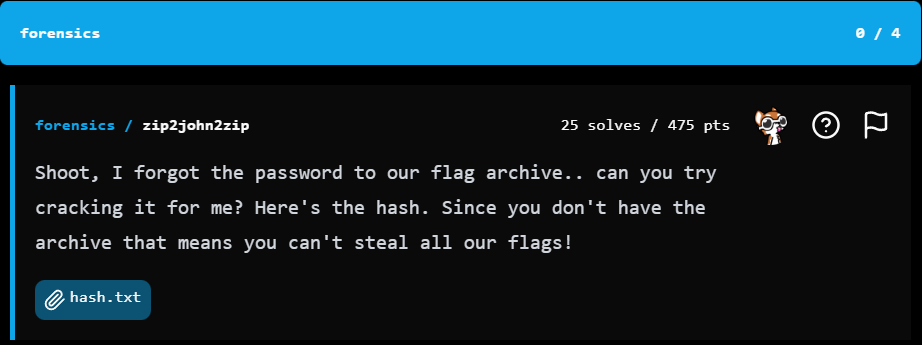

BuckeyeCTF_2025 - Forensic
Writeup - forensics/zip2john2zip


Đây là đoạn mã trong hash.txt
flag.zip/flag.txt:$pkzip2$1120342864ac0ae202603464aca3882c386d49756e1d70ab5f2d8b7ccf1703b28d2775e84d89ccf4bf26d0e735e9a817b0032b5071540889c34b9331b694d6042c30a0$/pkzip2$:flag.txt:flag.zip::flag.zip
Các thành phần quan trọng trong hash:
- C=1: Số lượng hash
- B=1: Số byte hợp lệ trong checksum
- DT=2: Loại dữ liệu (dữ liệu đầy đủ được nhúng)
- CL=0x34: Độ dài dữ liệu nén (52 bytes)
- UL=0x28: Độ dài dữ liệu không nén (40 bytes)
- CR=64ac0ae2: CRC32 cuối cùng
- Blob data: Dữ liệu đã được mã hóa/nén
Thành phần của đoạn mã trên
flag.zip/flag.txt : Đây là đường dẫn tệp trong kho lưu trữ ZIP.
flag.ziplà tên file ZIP.
flag.txtlà tệp bên trong ZIP.
$pkzip2$
- Định danh định dạng hash cho John the Ripper hoặc hashcat.
- Cho biết đây là hash của file ZIP được mã hóa bằng PKZIP2.
1*1*2*0*34*28*64ac0ae2*0*26*0*34*64ac*a388*
Đây là phần header của hash PKZIP2, chứa các tham số mã hóa:
1: Phiên bản định dạng hash (1 = PKZIP2).
1: Thuật toán mã hóa (1 = AES-128, 2 = AES-192, 3 = AES-256).
2: Loại dữ liệu (2 = hash của file nén).
0: Bit flags.
34: Kích thước dữ liệu đã nén (0x34 = 52 byte).
28: Kích thước dữ liệu gốc (0x28 = 40 byte).
64ac0ae2: CRC32 của dữ liệu gốc.
0: Thuộc tính phần tử (0 = file).
26: Kích thước field bổ sung (0x26 = 38 byte).
0: Kích thước tên file (0 = không có tên file trong hash).
34: Kích thước field mã hóa (0x34 = 52 byte).
64ac: Salt (16 bit) dùng để tạo khóa mã hóa.
a388: Password verification value (16 bit) dùng để kiểm tra mật khẩu.
Thử giải mã bằng john
$ john --wordlist=/usr/share/wordlists/rockyou.txt hash.txt
Using default input encoding: UTF-8
Loaded 1 password hash (PKZIP [32/64])
Will run 8 OpenMP threads
Press 'q' or Ctrl-C to abort, almost any other key for status
factfinder (flag.zip/flag.txt)
1g 0:00:00:00 DONE (2025-11-08 12:00) 10.00g/s 9666Kp/s 9666Kc/s 9666KC/s fmxrider..dolphins_lover
Use the "--show" option to display all of the cracked passwords reliably
Session completed.Sau khi show ra thì chúng ta đã biết được pass của nó là factfinder
┌──(thanhhai㉿Kali)-[~/BuckeyeCTF_2025/Forensic]
└─$ john --show hash.txt
flag.zip/flag.txt:factfinder:flag.txt:flag.zip::flag.zip
1 password hash cracked, 0 leftĐến đây chúng ta viết scritp tái tạo lại file zip
#!/usr/bin/env python3
# solve.py
# Usage: python3 solve.py hash.txt out.zip
# Rebuild a minimal zip file from a $pkzip2$...$/pkzip2$ blob in hash.txt.
# This script is tolerant to small formatting variations (odd hex length etc).
# It only reconstructs the zip file (does not automatically unzip).
import sys
import re
import struct
import binascii
from pathlib import Path
def extract_pkzip2_inner(text: str) -> str | None:
"""Return the string between $pkzip2$ and $/pkzip2$ (inner content) or None."""
m = re.search(r'\$pkzip2\$(.*?)\$/pkzip2\$', text, flags=re.DOTALL)
return m.group(1) if m else None
def find_longest_hex(s: str) -> str | None:
"""Find the longest contiguous hex substring in s."""
hex_pats = re.findall(r'[0-9a-fA-F]+', s)
if not hex_pats:
return None
# choose the longest (most likely the ciphertext blob)
return max(hex_pats, key=len)
def safe_unhex(hexstr: str) -> bytes:
"""Try to unhexlify. If odd-length, try fixing by appending '0' or removing last nibble."""
try:
return binascii.unhexlify(hexstr)
except (binascii.Error, ValueError) as e:
# odd-length or non-hex
# if odd-length, try appending '0' (common quick-fix) then try removing last char as fallback
hs = hexstr
if len(hs) % 2 == 1:
# try append '0'
try:
return binascii.unhexlify(hs + '0')
except Exception:
pass
# try drop last nibble
try:
return binascii.unhexlify(hs[:-1])
except Exception:
pass
raise
def build_minimal_zip(blob: bytes, parts: list[str], outpath: Path, filename: bytes=b"flag.txt"):
"""Construct minimal zip: LFH + blob + CDFH + EOCD and write to outpath."""
# try to parse some fields if available (hex in parts)
def gethex(idx, default=0):
try:
return int(parts[idx], 16)
except Exception:
return default
ver_needed = 20
try:
comp = gethex(9, 0)
comp_size = gethex(4, len(blob))
uncomp_size = gethex(5, len(blob))
crc32 = gethex(6, 0)
except Exception:
comp = 0
comp_size = len(blob)
uncomp_size = len(blob)
crc32 = 0
name = filename
# Local File Header fixed-size fields
lfh_fixed = struct.pack("<HHHHHIIIHH",
ver_needed, # version needed
1, # gp bit flag (set 1 as used by some zip2john output)
comp, # compression method
0, 0, # modtime, moddate
crc32,
comp_size,
uncomp_size,
len(name),
0) # extra length
lfh = b"PK\x03\x04" + lfh_fixed + name
# Central Directory File Header
ver_made = 20
disk_start = 0
int_file_attr = 0
ext_file_attr = 0
offset_lfh = 0 # LFH placed at file start for this minimal builder
cdfh_fixed = struct.pack("<HHHHHHIIIHHHHHII",
ver_made, ver_needed, 1, comp, 0, 0,
crc32, comp_size, uncomp_size,
len(name), 0, 0,
disk_start, int_file_attr, ext_file_attr, offset_lfh)
cdfh = b"PK\x01\x02" + cdfh_fixed + name
# EOCD
entries_on_disk = 1
total_entries = 1
offset_cd = len(lfh) + len(blob)
size_cd = len(cdfh)
eocd = b"PK\x05\x06" + struct.pack("<HHHHIIH",
0, 0,
entries_on_disk, total_entries,
size_cd, offset_cd,
0)
with outpath.open("wb") as fo:
fo.write(lfh)
fo.write(blob)
fo.write(cdfh)
fo.write(eocd)
def main():
if len(sys.argv) < 3:
print("Usage: python3 solve.py hash.txt out.zip")
sys.exit(1)
hashfile = Path(sys.argv[1])
outzip = Path(sys.argv[2])
text = hashfile.read_text(errors="ignore")
inner = extract_pkzip2_inner(text)
if inner is None:
print("No $pkzip2$...$/pkzip2$ block found in", hashfile)
sys.exit(2)
# Try to split by '*' (common) but fallback to finding hex blob
parts = inner.split('*')
# Attempt to find hex blob: prefer last part if it looks like hex, else find longest hex chunk
hex_candidate = None
if parts:
last = parts[-1].strip()
if re.fullmatch(r'[0-9a-fA-F]+', last):
hex_candidate = last
if not hex_candidate:
hex_candidate = find_longest_hex(inner)
if not hex_candidate:
print("Could not find any hex blob in the $pkzip2$ block.")
sys.exit(3)
# Try to unhexlify robustly
try:
blob = safe_unhex(hex_candidate)
except Exception as e:
print("Failed to decode hex blob (even after fixes):", e)
sys.exit(4)
try:
build_minimal_zip(blob, parts, outzip, filename=b"flag.txt")
except Exception as e:
print("Failed to build zip:", e)
sys.exit(5)
print("Wrote", outzip, "— try: unzip -P 'factfinder' {}".format(outzip))
if __name__ == "__main__":
main()
#Cách chạy : python3 solve.py hash.txt flag.zipĐến đây chúng ta sẽ được 1 file zip và giờ chỉ cần giải nén file zip ra là chúng ta nhận được Flag
unzip -P "factfinder" flag.zipVậy là chúng ta thu được Flag
Writeup - forensics/shredder
Forensics / Bugle

Toby Vulpine must have had a stroke when he made this.Wrap the answer in bctf{...}, for example bctf{myanswerhere}
File provided: Bugle.mp3
This was a fun challenge. We're provided with an mp3 audio file that sounds like a trumpet playing a song. If we analyze the audio file through various Spectogram Analysis tools, nothing obvious comes to mind.
Morse Code
- Google defines Morse code as
an alphabet or code in which letters are represented by combinations of long and short signals of light or sound.
- Morse Code is a form of encoding can be integrated into steganographic methods by hiding the Morse code signals within an innocuous "cover" medium in a way that conceals the very existence of a hidden message can be delivered in many formats, spikes in volume, light, patterns, tones...
Audio File Analysis
We can start by simply listening to and viewing the audio in any DAW or audio visualization tool.
- Let's start with Sonic Visualizer

Hmmm...Nothing too obvious here. However, we do see some clean breaks in-between notes. This could be an indicator that this may be morse code.
When analyzing Morse Code, we need SOMETHING in between - and . - A space, a consistent break. Something to tell us where to separate each character.
If we load this up into an online tool MusicGram, we see further confirmation of Morse Code

"How is this Morse Code?" You may ask...
Let's take a closer look...
Load the .mp3 into your DAW (Digital Audio Workstation) of choice...
- For this example, I use Ableton 12

...Now do you see it?
﴾͡๏̯͡๏﴿

...How about now?

Aha! NOW we're getting the hang of it!
( ━☞´◔‿ゝ◔`)━☞

In Ableton Grid view, a 1/4 of a bar is shown by zooming in. Notice the two different shades of grey. If you're not familiar with Ableton, just think of one of those grey blocks as one quarter of a bar.

- Notes that play for 1/4 of a bar represents a
- Notes that play for an 8th of a bar represent a
.
I chopped each note individually and cut all of the negative space to isolate each character. This helped me visualize the -'s and .'s
I've included the Chopped Bugle Audio file here as well.
If you go through the entire audio file, listening to each note and color-coding them for easy visualization, you'll end up with -- --- .-. ... . .- .-.. .-.. .- .-.. --- -. --.
You can then use CyberChef or another Morse Code Decoder to recover the decoded message.
Visual Representation


Alternative Solution
Rather than having to load the audio into a DAW, chop the notes up and color-code everything while manually listening and taking notes. You could use the Musicgram spectrogram tool and decode the morse just by looking at it...
But "How?" You may ask...
(ง'̀-'́)ง

- This is important when trying to decode morse, knowing where the breaks are, otherwise you'll end up something totally different than what is intended to be decoded.
- If you don't understand where the breaks are, you may end up convincing yourself that it's not Morse Code. (╯°□°）╯︵ ┻━┻
Visual Representation of Bugle.mp3 decoded using musitools.xyz/musigram
♪~ ᕕ(ᐛ)ᕗ

Conclusion
Flag - bctf{MORSEALLALONG}
- Shout out to the Buckeye CTF Staff for putting on a great event
- And of course my team, L3ak for coming in 1st place in the Open Division

If you enjoyed this walkthrough. Please give this repo a ⭐ and follow my GitHub for more